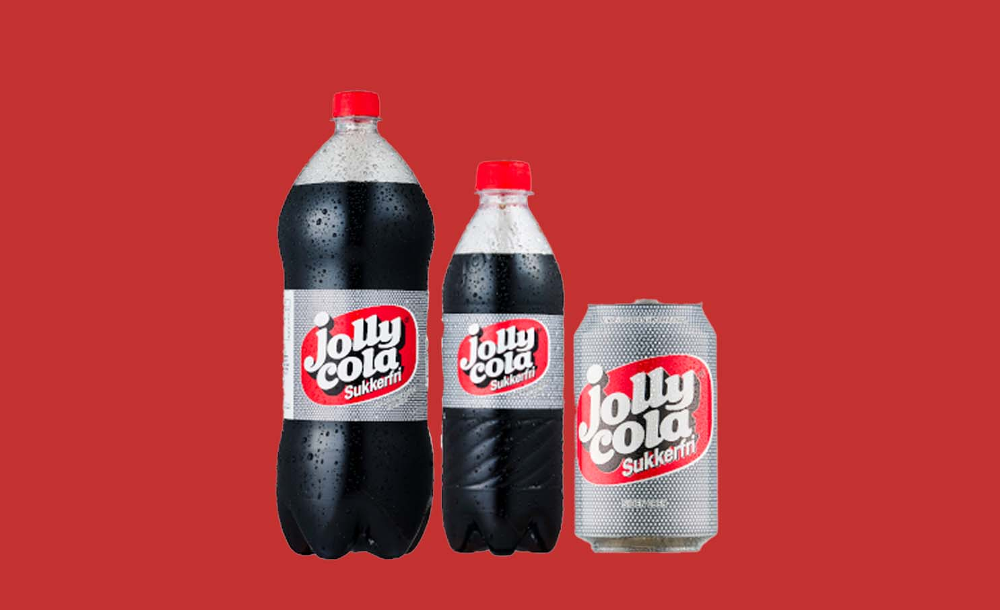

Jolly Cola
Den helt originale danske cola. Siden 1959 har danskerne bevist god smag ved at vælge Jolly Cola.
Forfriskende, lækker og fyldt med nostalgi – sådan kan vi alle bedst lide den!
Fås i 50 cl. og 150 cl. flasker samt i 33 cl. dåse.
Jolly Cola Sukkerfri
Original smag helt uden sukker. Til dem, der vil undgå sukker i deres cola,
men ikke vil gå på kompromis med den gode smag. 0% sukker, 100% Jolly.
Fås i 50 cl. og 150 cl. flasker samt i 33 cl. dåse.
Jolly Time
Danskernes originale sportsvand. Tid til sport eller frisk smag af citrus, lime og druesukker?
Så er det tid til Jolly Time – altid helt frisk.
Fås i 50 cl. og 150 cl. flasker samt i 33 cl. dåse.
Jolly Appelsin
Jolly Appelsin Sukkerfri har et meget højt indhold af frugtsaft.
Det er en af de mest velsmagende appelsinsodavand på markedet.
En forfriskende og smagfuld oplevelse.
Jolly Appelsin Sukkerfri fås på 150 cl. og 50 cl. flaske og på 33 cl. dåse.